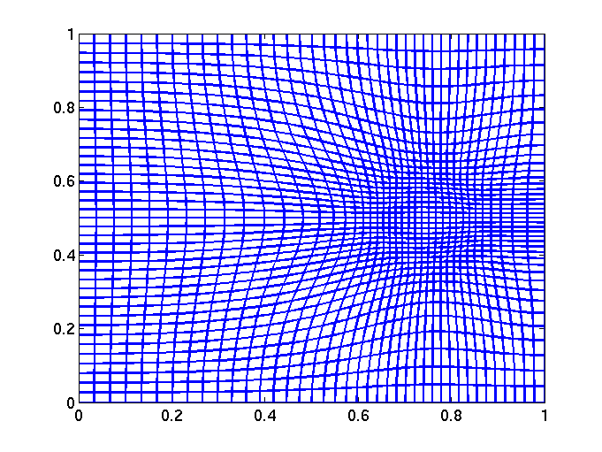

| |
|
|
Mohamed Sulman
Personal Profile
Associate Professor
Department of
Mathematics and Statistics
Wright State University
3640 Col. Glenn Highway
Dayton OH 45435
E-mail: mohamed[dot]sulman[at].wright.edu
Office: 234 MM
Phone: +1 (937) 775-2775

Educational Background
- Ph.D., Simon Faser University
- M.Sc., Simon Fraser University
- M.Sc., Tsinghua University
- B.Sc., Al Neelain University
Research
-
Research Interests:
- Adaptive Grid Generation in Higher Dimensions.
- Numerical Partial Differential Equations.
- Optimal Mass Transport Problem.
- Computational Fluid Dynamics.
- Transport and Mixing in 3D Ocean.
- Medical Image Computing.
-
Research Projects
-
Publications
-
PhD opportunities for graduate students
There is limited GTA funding for gradaute reseach available for students admitted through IASM PhD program at WSU. Please feel free to contact me if you have research interests close to the area of applied and computational mathematics. When you send an email, please include details of your mathematics backgraound and future research plans. -
Former Graduate Students:
- Truong(John) Ngyuen (PhD)
-
Current Teaching: